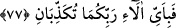
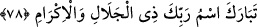

77. Öyleyken Rabbinizin hangi nimetlerini yalanlayabilirsiniz?
O, size üzerine yaslanıp istirahat edeceğiniz yerler hazırladığı halde Rabbinizin hangi
nimetlerini yalanlayabilirsiniz?.
78. Büyüklük ve ikram sâhibi Rabbinin adı yücelerden yücedir.
Allah Teâlâyı tenzih ve takdis anlamındaki “tebâreke” ile başlayan bu âyet-i
kerîmede, sûre-i celilede zikredilen mahlûkâta bolca verilen nimetler anlatılmaktadır.
Yâni O’nun büyük ismi yücedir. Açıklandığı gibi mahlûkâta verilen nimetleri bildiren
Rahmân ism-i celili ile bu sûrenin başlaması yüceliğinin bir başka ifâdesidir. O’nun
ism-i celîli, şanına lâyık olmayan şeylerden yücedir. O’nun nimetlerini inkâr ve
yalanlamak kabilinden olan işler O’na zarar vermez. O’nun büyüklüğünü anlatan ism-i
celili böylesine yüce olursa, kutsal ve yüce zâtı nicedir! Âyette geçen isim, sıfat
anlamındadır, denilmiştir. İfâdeler bir pekiştirmesidir, denilmiştir. Sonra yine “es-
selâmü aleyküm” demek gibidir, denilmiştir.
Fethürrahmân adlı eserde, bu isim ile müsemmânın kasdedildiği yerdir, denilmiştir.
et-Te’vilâtü’n-Necmiyye’de bu, ismin sâhibinin kasdedildiğini gösterir. Çünkü
yücelerden yüce olan ismi değil, bizzat ismin sâhibidir. İsmin yüceliği zâtına
bağlılığından ötürüdür. Lütuf, kahır, celâl, ikrâm gibi sıfatlarla sıfatlanan isimden de
ismin sâhibi olan/müsemmâ kasdedilir.
Emalî adlı eserde de, “isim müsemmâdan başka değildir” denilmiştir.
Zerrûkî’nin Esmâü’l-hüsnâ şerhinde denilmiştir ki; sahih olan, ismin müsemmâdan
başka olmasıdır. Bazı kişiler üzerinde durmaktan çekinirken, bazıları da açıklamağa
çalışmışlardır. Diğer bazıları da o konuda susmayı tercih etmişlerdir. Ancak sâlih
selefimiz, mes’ûliyetten korunmak ve diğerlerini de yanıltmamak için, isim ile
müsemmâ, sıfat ile mevsûf, (Kur’an ile ilgili) tilâvet ile metlüvv konularında
tartışmazlardı. Bu da takvânın ta kendisidir.
Tenzih ve açıklamalardan zikredileni ikmal için Rabb’imiz kendisini celâl ve ikrâm
sıfatlariyle vasıfladı.
Denilmiştir ki; Mekke’de Kur’an’dan Kureyşlilere açıktan okunan ilk şey bu sûrenin
başındaki âyetlerdi. Abdullah b. Mes’ud (r.a.)’dan rivâyet edilmiştir ki o şöyle
demiştir; “Allah rasûlünün ashâbı toplandı ve bu zamana kadar Kureyşliler Kur’an’dan
hiçbir şey duymadılar, içimizden onlara Kur’ân’ı kim duyuracak?” diye aralarında
konuştular. Abdullah b. Mes’ud: “Eziyet görecek olsam da onlara açıktan Kur’an
okuyacak kişi ben olayım” dedi. Sonra gelip Kureyşlilerin arasında durdu ve Rahmân